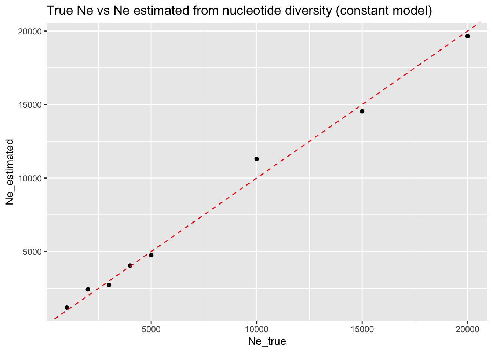
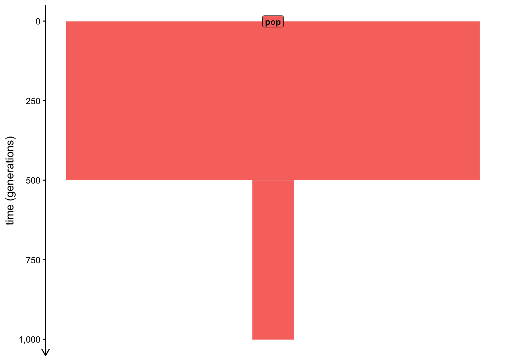
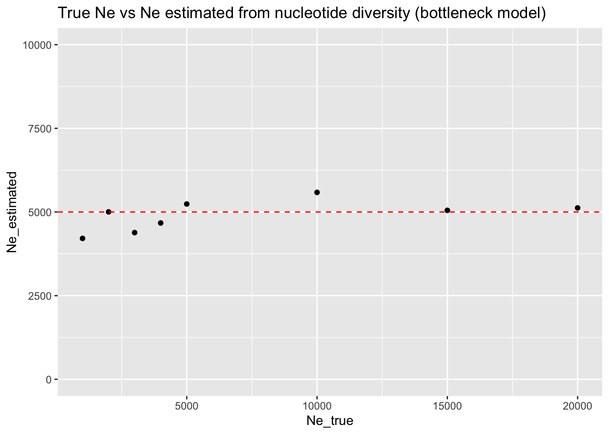
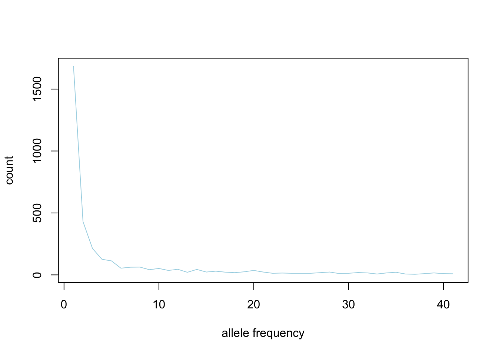

TODO: Add a reminder on how to work (i.e., build upon previous code in a single script, developing small self-contained pipelines).
Introduction
In this session, you will learn how to compute population genetic statistics from tree sequences simulated from slendr models, using its interface to the tree-sequence module called tskit.
Computing tree-sequence statistics on populations or individuals populations requires a specification of what should exactly be computed and how. For instance, which particular individuals (referred to by their names) should a computation be performed? If multiple individuals should be grouped together for a particular computation, how do we define this grouping?
In order to learn all the operations needed to do this, you will be working through a set of exercises focused on the most fundamental concepts of population genomics. They’ve been designed to help you get the necessary technicalities under your belt while serving as little popgen puzzles on their own, regardless of your level of experience (or lack thereof) of population genetic theory.
“However, the estimator can be biased by population structure. For example, theta is downwardly biased in an exponentially growing population. It can also be biased by violation of the infinite-sites mutational model; multiple point mutations at a single site will downwardly bias the estimate.”
Preparation
Let’s start with the following script as a basis. Save this as TODO.R, then read through it and understand what it’s going to do (generally, that’s the best practice for learning how to understand code quickly). When you do that, run the entire script and inspect the produced visualization of the model to get a confirmation of your idea.
library(slendr)init_env()pop <-population("pop", time =1, N =5000)model <-compile_model(populations = pop,generation_time =1, simulation_length =1000)plot_model(model, proportions =TRUE)
Let’s start practicing how to compute tree-sequence summary statistics with the simplest possible computation imaginable: computing a single summary statistic from a single population, such as nucleotide diversity.
The simplest possible thing we can do is to provide the name of a single individual. Given that you know that nucleotide diversity quantifies the average number of nucleotide variants per site between two DNA sequences across all possible combinations of pairs in a sample from a population, what metric is it equivalent to if you compute ts_diversity() on a single simulated individual (i.e., on its two chromosomes)?
Answer is that we get heterozygosity:
ts_diversity(ts, sample_sets ="pop_1")
# A tibble: 1 × 2
set diversity
<chr> <dbl>
1 pop_1 0.000186
Note that this is the same thing as this (because a single value in R is the same thing as a vector of length one):
ts_diversity(ts, sample_sets =c("pop_1"))
# A tibble: 1 × 2
set diversity
<chr> <dbl>
1 pop_1 0.000186
# A tibble: 1 × 2
set diversity
<chr> <dbl>
1 pop_subset 0.000195
The model which you programmed implies what should be the nucleotide diversity expected in the simulated population. Compute the nucleotide diversity in all populations using ts_diversity(). Do you get numbers that (relatively between all populations) match what would expect from the model you programmed?
NoteClick to see the solution
df <-ts_diversity(ts, list(all = samples))df
# A tibble: 1 × 2
set diversity
<chr> <dbl>
1 all 0.000194
\(\theta = 4 N_e \mu\)
\(N_e = \frac{\theta}{4 \mu}\)
df$Ne <- df$diversity / (4*1e-8)df
# A tibble: 1 × 3
set diversity Ne
<chr> <dbl> <dbl>
1 all 0.000194 4851.
Exercise: Generalizing the simulation
Custom functions are absolutely critical for efficient, reproducible science. They eliminate copy-pasted bug-prone code and make it much easier to explore ideas, test parameters, and explore various models. In this workshop, you’ll soon see how often I force you to write custom functions—hopefully, by the end you will appreciate why I did this!
To practice the concept of custom functions, let’s start with something very easy.
Doing this work must seem like extra unnecessary bother. After all, you’re effectively writing even more code! But the pay off comes later, as you will see.
The first instinct when a need to re-run an analysis with different parameters, or with different data, etc., is to just make a copy of your original script, and work from that, modifying the copied script and so on. This works, but is usually the wrong approach.
Let’s first abstract away the computation of \(\pi\) and the inference of \(N_e\). By extracting the relevant code into a dedicated, self-contained function, we reduce duplication of code and, by extension, the potential for introducing hard-to-trace bugs in our scripts.
compute_pi <-function(model) { ts <-msprime(model, sequence_length =1e6, recombination_rate =1e-8) %>%ts_mutate(mutation_rate =1e-8) samples <-ts_names(ts) df <-ts_diversity(ts, list(all = samples))# compute the estimated Ne from the data based on the equation:# theta = 4 * mutation_rate * Ne => Ne = theta / (4 * mutation_rate) df$Ne_estimated <- df$diversity / (4*1e-8) df}
compute_pi(model)
# A tibble: 1 × 3
set diversity Ne_estimated
<chr> <dbl> <dbl>
1 all 0.000208 5212.
simulate_const <-function(Ne) { pop <-population("pop", time =1, N = Ne) model <-compile_model(populations = pop,generation_time =1, simulation_length =1000 ) df <-compute_pi(model)# add annotation for downstream analyses df$Ne_true <- Ne df}
simulate_const(1000)
# A tibble: 1 × 4
set diversity Ne_estimated Ne_true
<chr> <dbl> <dbl> <dbl>
1 all 0.0000297 743. 1000
simulate_const(3000)
# A tibble: 1 × 4
set diversity Ne_estimated Ne_true
<chr> <dbl> <dbl> <dbl>
1 all 0.0000970 2425. 3000
simulate_const(10000)
# A tibble: 1 × 4
set diversity Ne_estimated Ne_true
<chr> <dbl> <dbl> <dbl>
1 all 0.000399 9970. 10000
library(ggplot2)library(purrr)df_const <-map_dfr(c(1000, 2000, 3000, 4000, 5000, 10000, 15000, 20000), simulate_const)ggplot(df_const, aes(Ne_true, Ne_estimated)) +geom_point() +geom_abline(slope =1, color ="red", linetype ="dashed") +ggtitle("True Ne vs Ne estimated from nucleotide diversity (constant model)")

Exercise: Comparing multiple models
Let’s suppose we want to see how robust our statistic of interest (in this toy example, nucleotide divertisity, \(\pi\)) is to a choice of the underlying demographic model. In the previous exercise, we worked with using \(\pi\) to estimate the effective population size of a population under study (\(N_e\)) and verified that it works very well for a model of a long-term constant population size.
How about when we introduce a bottleneck into our model? How well does our \(N_e\) estimate work in such case?
Build a new model of a single population “pop”, again starting with \(N_e\) of 5000, then introduce a bottleneck using the function resize() which will set the size of the population to the given value Ne at time 800. You can again start by writing a couple of lines of code implementing such model, perhaps setting the bottleneck to \(N_e\) of 500, and once you have it, wrap it around in a function simulate_bottle(Ne), just like you did in the previous exercise.
pop <-population("pop", time =1, N =5000) %>%resize(N =500, time =500)model <-compile_model(populations = pop,generation_time =1, simulation_length =1000)plot_model(model, proportions =TRUE)

simulate_bottle <-function(Ne) { pop <-population("pop", time =1, N =5000) %>%resize(N = Ne, time =500) model <-compile_model(populations = pop,generation_time =1, simulation_length =1000 ) df <-compute_pi(model)# add annotation for downstream analyses df$Ne_true <- Ne df}
We can see that even a drastic population bottleneck such as the one we programmed does not actually reduce the observed levels of nucleotide diversity that much! As a result, our \(N_e\) estimate is very wrong—we consistently estimate it at the level of 5000 (i.e., the size prior to the bottleneck), regardless of the true size of the population after the bottleneck.
What this means that estimating \(N_e\) from nucleotide diversity (which is very often done in population genetics) only works reliably in a population which has reached a long-term stable effective size.
We will see about a more robust method to do this in a later exercise.
library(ggplot2)library(purrr)df_bottle <-map_dfr(c(1000, 2000, 3000, 4000, 5000, 10000, 15000, 20000), simulate_bottle)ggplot(df_bottle, aes(Ne_true, Ne_estimated)) +geom_point() +geom_hline(yintercept =5000, color ="red", linetype ="dashed") +ggtitle("True Ne vs Ne estimated from nucleotide diversity (bottleneck model)") +ylim(0, 10000)

Exercise: Allele frequency spectrum
library(slendr)init_env()pop <-population("pop", time =1, N =1000)model <-compile_model(populations = pop, generation_time =1, simulation_length =1000)ts <-msprime(model, sequence_length =10e6, recombination_rate =1e-8) %>%ts_mutate(mutation_rate =1e-8)subset <-sample(ts_names(ts), 20)afs <-ts_afs(ts, sample_sets =list(subset))plot(afs, type ="l", col ="lightblue", xlab ="allele frequency", ylab ="count")

library(slendr)init_env()afs_const <-function(Ne) { pop <-population("pop", time =1, N = Ne) model <-compile_model(populations = pop, generation_time =1, simulation_length =1000) ts <-msprime(model, sequence_length =10e6, recombination_rate =1e-8) %>%ts_mutate(mutation_rate =1e-8) subset <-sample(ts_names(ts), 10) afs <-ts_afs(ts, sample_sets =list(subset))data.frame(Ne = Ne,bin =1:length(afs),freq = afs )}